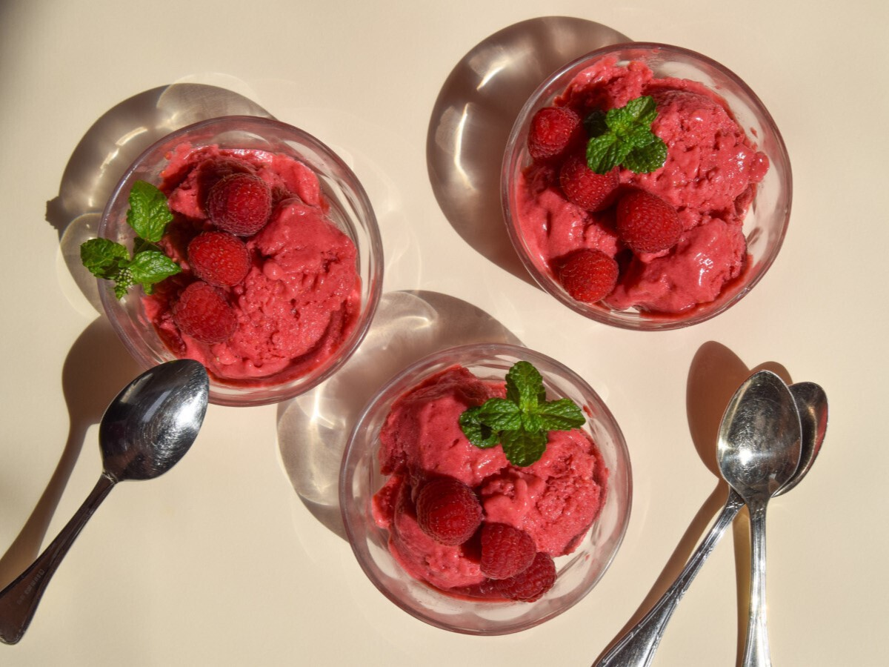
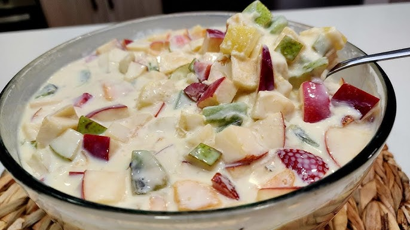

Postres
Helados, sorbetes y polos
Cuando buscamos un postre ligero con el que rematar una comida o cena copiosa, nuestros mejores aliados son los
helados, sorbetes y polos. Son refrescantes, digestivos y ayudan a rebajar la sensación de pesadez que viene
cuando nos pasamos comiendo. Nos encanta el helado de cerezas y yogur, en el que se pueden usar otros frutos de
temporada o frutos rojos congelados, como es el caso del helado de frutos rojos y yogur sin heladera.
Postres y tartaletas
Las tartaletas son un postre que nos encanta preparar en casa, ya que podemos hacerlas a nuestro gusto y
personalizarlas con los ingredientes que más nos gustan. Una de nuestras favoritas es la tartaleta de frutas
frescas, que combina una base crujiente con una crema suave y frutas de temporada. Otra opción deliciosa es
la
tartaleta de chocolate y avellanas, perfecta para los amantes del chocolate.

Frutas con crema
Las frutas con crema son un postre clásico que nunca pasa de moda. Podemos preparar una deliciosa crema
pastelera casera y acompañarla con frutas frescas como fresas, kiwi, plátano o mango. Otra opción es hacer
una crema de yogur
y miel, que aporta un toque dulce y saludable al postre. Las frutas con crema son una opción versátil y
fácil de preparar que siempre triunfa.

Tarta de frutas
La tarta de frutas es un postre que combina una base de masa quebrada o bizcocho con una capa de crema
pastelera y una variedad de frutas frescas por encima. Es un postre colorido y apetitoso que se puede
personalizar según la temporada y los gustos personales. Algunas combinaciones populares incluyen fresas
y kiwi, melocotón y frambuesas, o una mezcla de frutas tropicales.